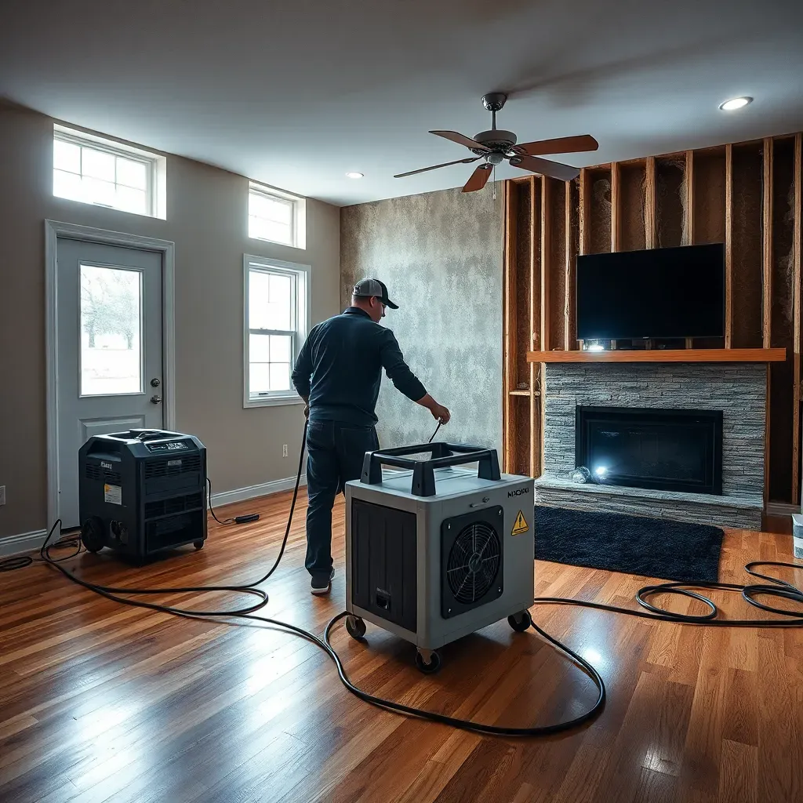

Water Damage Mold Removal — Address It Before It Spreads
Water damage and mold are directly connected. Mold growth begins within 24–48 hours of a water event. Treating water damage without checking for mold — or treating visible mold without finding the water source — guarantees the problem comes back.
When Water Damage Creates a Mold Problem

Colorado Springs homeowners frequently call us weeks or months after a water event, frustrated that mold appeared despite their best efforts to dry everything out. The pattern is consistent: visible water is gone, surfaces look and feel dry, but moisture remained trapped in wall cavities, under flooring, or in insulation — sustaining mold growth no one knew was happening.
These situations require professional assessment:
- Any water intrusion that wasn't professionally dried within 24–48 hours
- Basement flooding from snowmelt, rain events, or drainage failure
- Burst or leaking pipes — especially inside walls or under slabs
- Appliance failures (water heater, washing machine, dishwasher) where water spread under flooring
- Roof leaks that got into attic or wall framing
- Musty smell appearing days or weeks after a water event that seemed minor
Even in dry climates, trapped moisture inside structures sustains mold for months. The visible water drying out doesn't mean the structure dried out.
How We Handle Water Damage Mold
- Moisture Mapping: Calibrated meters identify moisture still present in walls, floors, and ceilings. We find what's wet before we start — not after we open walls and discover a larger problem.
- Mold Assessment: Visual inspection and sampling identify active mold growth and its extent. This determines scope before work begins and before you commit to a price.
- Containment: The work area is sealed off with plastic sheeting and negative air pressure. Disturbing mold without containment spreads spores throughout the home via HVAC.
- Removal and Treatment: Contaminated materials are removed and properly disposed of. Non-porous surfaces are HEPA-vacuumed and treated with antimicrobial solution. Structural wood gets treated where removal isn't practical.
- Drying Verification: We confirm structural materials are at normal moisture levels before recommending rebuild. Rebuilding over wet materials restarts the cycle.
- Clearance Testing: Independent air sampling confirms mold spore levels are within normal range. You get documentation proving the problem is resolved.
What Every Water Damage Mold Job Includes
- Written scope and itemized price before any work starts
- Moisture mapping to find all affected areas — not just the obvious ones
- Full containment with negative air pressure
- Removal of all contaminated porous materials
- Antimicrobial treatment of all affected surfaces
- Structural drying verification before rebuild recommendation
- Documentation package for insurance claims
- Post-remediation clearance testing recommendation
What Does Water Damage Mold Removal Cost?
Cost depends heavily on how far the water spread and how long it was present before being found. General ranges for this market:
- Localized damage (single area under 10 sq ft): $500–$1,500
- Mid-size (one room or wall section): $1,500–$4,000
- Extensive / basement or multi-area: $4,000–$9,000
The inspection is free and gives you the exact number. Water damage jobs from insured events often qualify for partial or full insurance coverage — we document cause and scope to support your claim.
Frequently Asked Questions
How quickly does mold grow after water damage?
Mold can begin growing within 24–48 hours in warm, humid conditions. In finished basements and wall cavities, growth often begins before homeowners realize water has penetrated. This is why rapid response matters — every day of delay expands the affected area and increases remediation cost.
We already dried it out — do we still need mold testing?
Yes, especially if more than 24–48 hours passed before drying started. Visible water is gone, but moisture trapped in drywall, insulation, and wood framing sustains mold growth for weeks. A post-drying moisture inspection is the only way to confirm materials actually dried completely.
Does homeowners insurance cover water damage mold?
Mold from a sudden, covered water event — burst pipe, appliance failure, storm damage — is often covered. Mold from chronic leaks or gradual moisture is typically excluded. We document cause and scope to help support insurance claims where applicable.
Had Water Damage? Don't Wait on Mold.
Same-day response for active water damage events. Free inspection, written estimate, no obligation. We answer or call back within 1 hour.